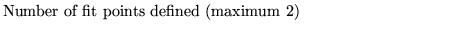
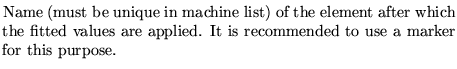

Input formatParameter definitions
SET Fit point.................(up to 80 characters)
n Position1 [Position2]
n 
Positioni 
Examples
The example comes from demo10. It illustrates the use of this operation in conjunction with the least square fit operation.
set fitpoints 2 fit1 fit2 least square fit 1 2 11 11 2.8 0 0 0 0.11 0 0 0 q1h k1 0.0001 q2h k1 0.0001 q3 k1 0.0001 qf1 k1 0.0001 qd1 k1 0.0001 qf2 k1 0.0001 qf3 k1 0.0001 qf k1 0.0001 qd k1 0.0001 qs1 k1 0.0001 qs2 k1 0.0001 22 0.0 1.0 24 0.0 1.0 27 0.0 1.0 25 1.773333333 1.0 30 1.5166666666 1.0 1031 0.0 1.0 1032 0.0 1.0 1033 0.0 1.0 1034 0.0 1.0 1036 0.0 1.0 1037 0.0 1.0 0,